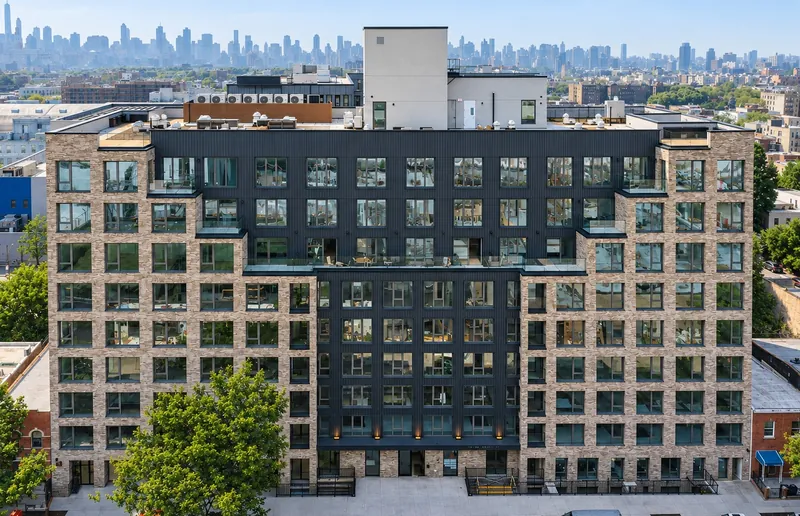
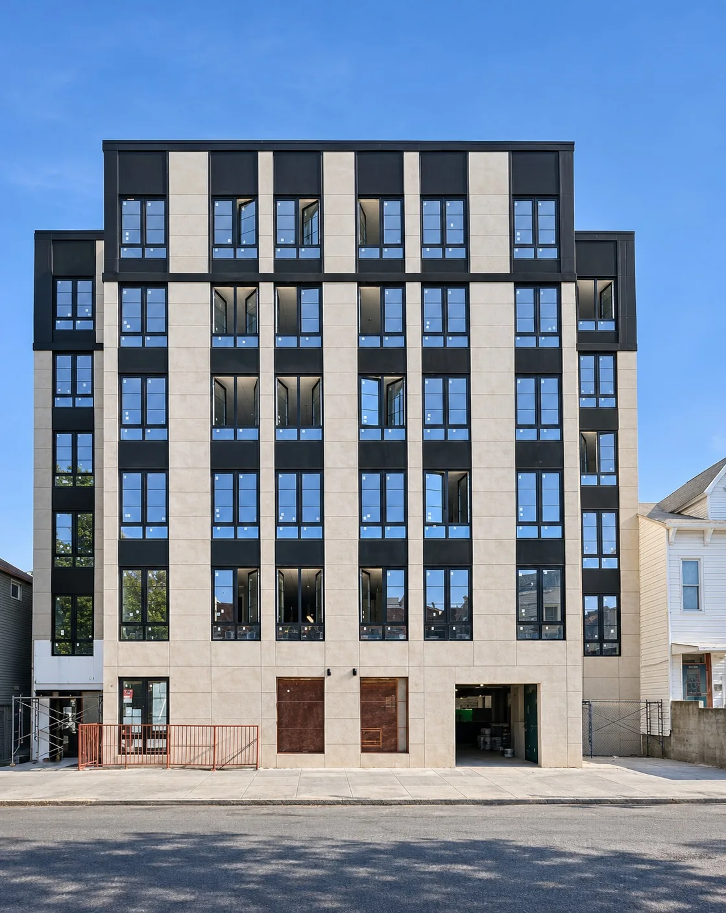
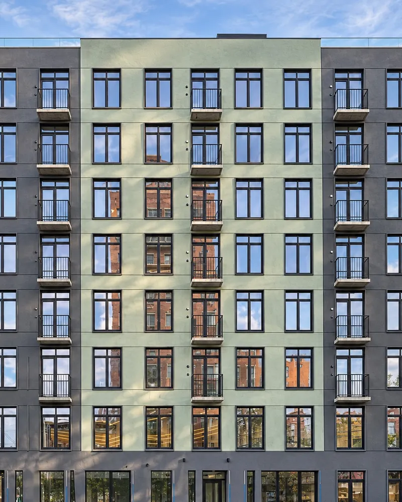
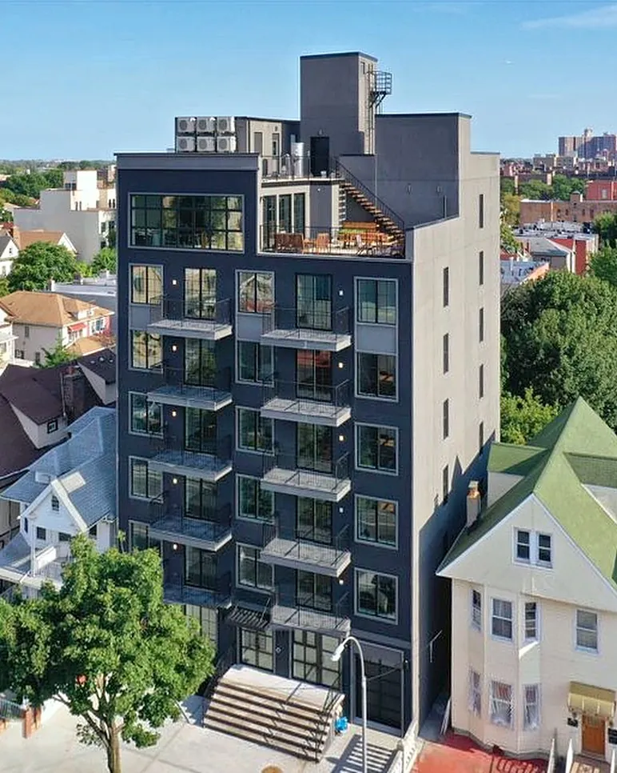
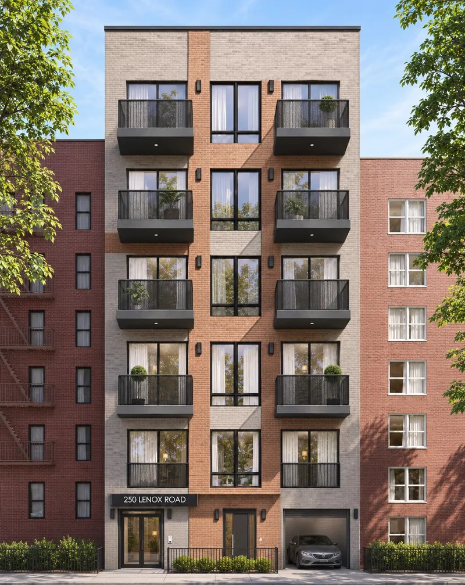
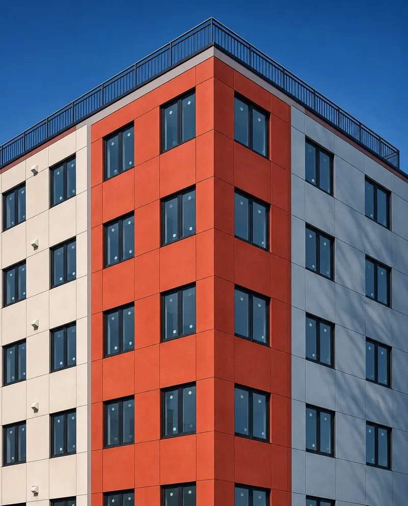
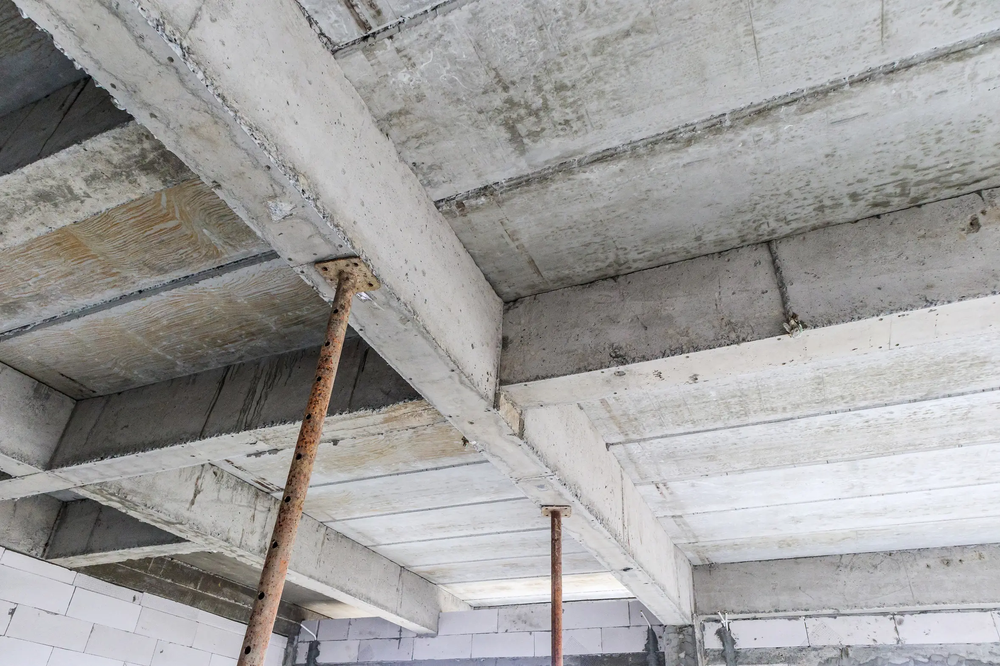
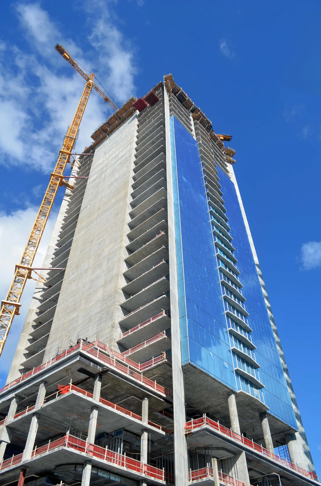
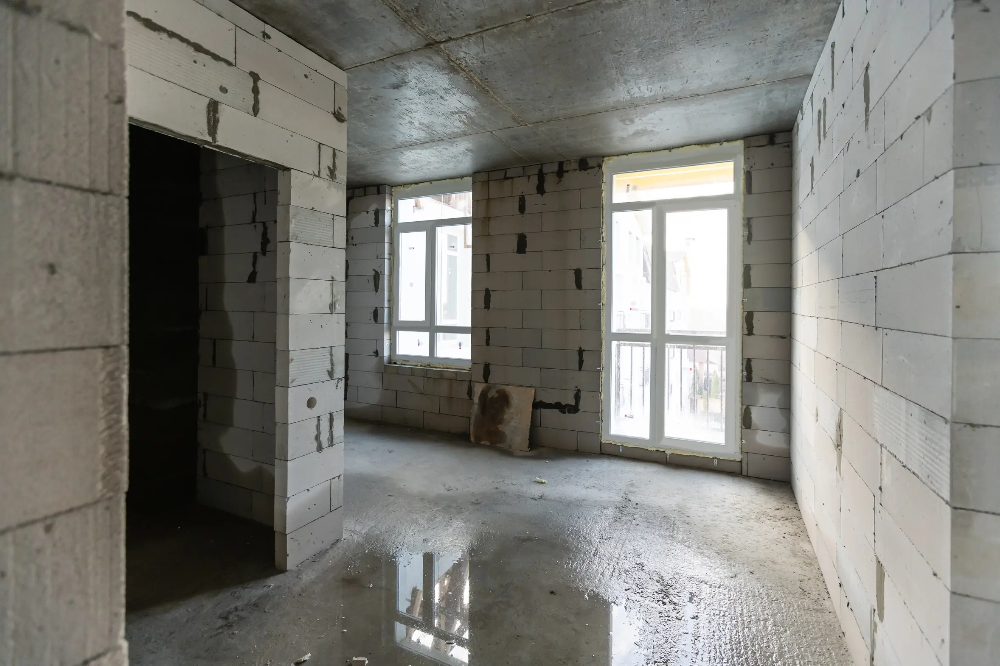
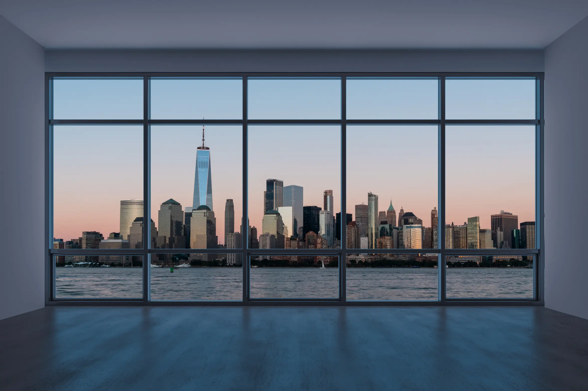

In construction
34-16 38th Street
9 stories89 apartments
Construction manager · New York City
Construction management for ground-up apartment buildings in Brooklyn and Manhattan, up to 99 apartments.
The firm
Boulder Builders is a construction manager for ground-up apartment buildings, low-rise to high-rise. We work on the owner's side: we bid every trade, bring you the numbers and fight for the best price.
From New York City Department of Buildings records

Completed 20222913 Snyder Avenue · East Flatbush, BrooklynOpen the projectFeatured buildings
Featured buildings of 20 apartments and more, Brooklyn first. Drag through them, or open one for the full story.
New-building permits held under our general contractor registration, and final certificates of occupancy. Photography of each building is being added.

In construction
9 stories89 apartments

Completed 2023
8 stories49 apartments

Completed 2022
7 stories22 apartments
Completed 2022
6 stories41 apartments

RenderingCompleted 2020
7 stories24 apartments

Completed 2024
7 stories25 apartments
Completed 2026
7 stories25 apartments
In construction
7 stories46 apartments
The record
Brooklyn, Queens and the Bronx. Hover a building to see it; open it for the full project.
The map could not load here. Every building is listed beside it.
30 buildings
The team
Experience you can check on the public record. Every building on this page sits under our general contractor registration, and the team has taken buildings from new-building permit to final certificate of occupancy since 2016.
Buildings completed by year Apartments above each bar
We represent you, not ourselves. The project's interest comes first at every decision.
Subcontractors price each scope. We level their numbers, and you choose.
Every bid, invoice and change order open to you.
The model
A general contractor gives you one price and works for himself. A construction manager works for you.
A general contractor, lump sum
Boulder Builders, construction manager
The process
From concept design to the finished building, in six steps.
The drawings go out to the trades. Their numbers come back leveled scope by scope, so you choose with the full picture.
Schedule, logistics, buyout and Department of Buildings filings, planned before the first pour.
Foundations, then the frame, one floor at a time.
Facade, windows and roof close the building in.
Mechanical, electrical, plumbing and finishes, apartment by apartment.
Inspections, sign-off and the keys to the owner.




From concept design
to finished building.
Estimate
A first look at the hard cost of a new apartment building in Brooklyn or Manhattan. Choose the building and see the range.
Estimated hard cost
$0million
Middle of the range
Per gross square foot
Hard construction cost only: not land, design, permits, financing or the developer's fee.
A range from published New York cost data, not a bid: your bid comes from the trades, priced for your building.
Request a bidSources: Rider Levett Bucknall, New York multifamily construction costs; RSMeans, New York apartment building model.
For developers
Send the drawings and the bid due date. We take them out to the trades and bring the numbers back to you.
Request a bid
Step 1 of 3
Your bid request is in.
Thank you. We will reply by email, with where to send your drawings.